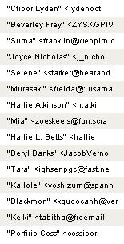
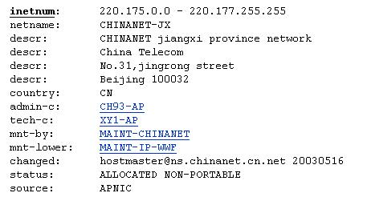

| BOOK AND SOFTWARE REVIEWS | ||||
Jones, R. Internet forensics. Sebastopol, CA: O'Reilly, 2005. xii, 223 pp. ISBN 0-596-10006-X $39.95; £28.50.
Anyone who uses the Internet, especially for e-mail, will be well aware of the annoyance caused by spam, the various 'phishing' strategies aimed at identity theft and the Nigerian scams—which have now emigrated to other parts of the world.
This is what one of my mailboxes looks like pretty well every day:
Fortunately, it is not one that I use a great deal and, even if the mail system didn't tag them as spam, the messages would be pretty clearly identifiable, simply because of the subject lines and some of the authors names:
Much of this stuff would be just a nuisance, to be got rid of by hitting the delete button, but some of it is more dangerous and can appear to be quite plausible. Various phishing attempts are easy to identify because they mention the names of banks and companies with which I never deal and so, clearly, I cannot be getting any genuine confidential communications from them. But many people are connned into believing that a former government Minister in Nigeria really does wish to give them lots of money, or that they have won a European lottery, or that their bank needs to check their account numbers and PIN.
What is going on is criminal activity and forensics, as the author of this book tells us, is the application of scientific methods in criminal investigations and, hence, Internet forensics is the application of scientific methods to the uncovering of Internet crime.
The author, who runs a bioinformatics company, lists the reasons for the enormous growth in Internet crime:
Internet scams don't cost much to set up. The potential audience is huge. The chance of getting caught is low. The chance of getting prosecuted is minimal. People are making money doing it. (p. 3)
In these circumstances, what criminal worth his salt could miss out on a deal like this?
More to the point: What can we do about it?
Doing something about it is the aim of the book and it is really intended for those who manage Websites, rather than the average Web user. Consequently, to put its ideas fully into effect you need server access and the ability to run scripts of one kind or another. However, there are guidelines for the average user also, and, if you are interested, ways of tracking the spammer and the fraudster that you can employ yourself.
The first thing is to locate where the spam is coming from and here there are built-in tools in Unix and MacOS machines for 'whois' lookup. However, you can also find Web sites that will do this for you and using one of these I found the following information for a server from which spam had been sent to me:
However, just because the mail server is in China does not necessarily mean that that is where the spammer is located. The spam message mentioned an online shop for fake watches: 'http://it.geocities.com/denis_cotton/' and it.geocities.com is an Italian subsidiary of Yahoo's Geocities web hosting service. There's more—the 'dennis_cotton' sub-directory automatically transfers to another site: http://yeh.alterthetide.com/ which is the online shop for the fake watches. This proves to be a fake Web address, since no 'whois' directory can locate it and I assume that the spammer is located in Italy and that the 'dennis_cotton' subdirectory contains a routine to generate the Webpage. The author of this book notes that one of the give-away patterns of Web addresses is that they are generated by linking together two or three words with .com or whatever added. 'Alter-the-tide' fits this pattern and I wouldn't be surprised if the program generates different names, depending upon where the hit is coming from. I have to conclude that the spammer is probably Italian, using a mail server in China to send the spam - or doing so from Italy, via China.
In any event, why would I want to pay $250 or more for a fake watch?
There's much, much more in the book about tracking and defeating spammers and fraudsters and anyone who runs an IT service and is serious about reducing spam will benefit by having this book on his or her desk.
Professor T.D. Wilson
Editor-in-Chief
December, 2005
How to cite this review
Wilson, T.D. (2005). Review of: Jones, R. Internet forensics. Sebastopol, CA: O'Reilly, 2005. Information Research, 11(2), review no. R203 [Available at: http://informationr.net/ir/reviews/revs203.html]